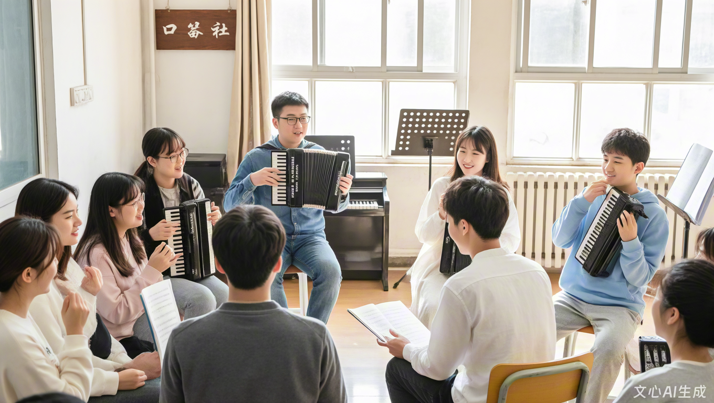

本次“琴韵飞扬”专场音乐会是口琴社2024年秋季学期的压轴活动，于12月15日在大学生活动中心大礼堂举办。 音乐会共分为“经典传承”“流行改编”“创意合奏”三个篇章，涵盖了18个精彩节目。
节目形式丰富多样，既有《茉莉花》《梁祝》等经典曲目的独奏表演，也有《稻香》《小幸运》等流行歌曲的口琴合奏， 更有社员原创的《校园晚风》以口琴搭配吉他的创新形式呈现，赢得了现场观众的阵阵掌声。
本次音乐会共有23名社员参与演出，其中10名是大一新成员。他们经过一学期的系统训练， 从气息控制到指法配合都有了显著进步，完美展现了口琴社“以老带新、共同成长”的社团氛围。
音乐会吸引了全校300余名师生到场观看，现场座无虚席。演出结束后，不少观众表示被口琴的独特魅力打动， 纷纷咨询口琴社的招新信息，为2025年春季招新积累了良好的口碑。